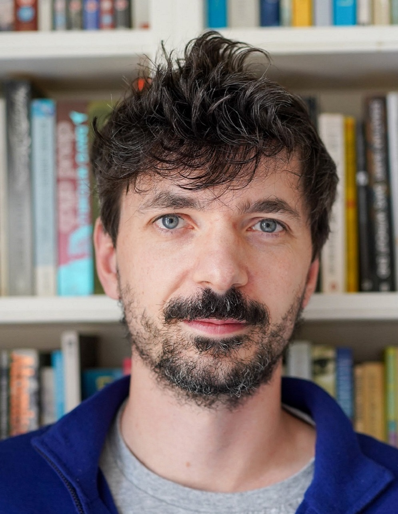

Current BayesComp-ISBA board members
Nicolas Chopin. Section Chair 2020-2021.
Nicolas is a Professor of Data Sciences/Statistics/Machine Learning at ENSAE, Institut Polytechnique de Paris. Nicolas is interested in all aspects of Bayesian computation, including Monte Carlo methods like Sequential Monte Carlo and fast approximations like Expectation Propagation and variational Bayes. For more information, visit his website.
David Rossell. Section Chair-Elect 2020-2021.
David is a Ramón y Cajal Fellow at the Dept. of Economics & Business of Universitat Pompeu Fabra in Barcelona. David's research interests broadly include high-dimensional inference, experimental design, dimensionality reduction and applied statistical modeling, with emphasis on the Bayesian approach. For more information, visit his website.
Pierre Jacob. Program Chair 2020-2021.
Pierre is an Professor in Statistics at ESSEC Business School. Pierre develops methods for statistical inference, Monte Carlo, to compare models, to estimate latent variables. For more information, visit his website.
Richard Everitt. Treasurer 2021-2022.
Richard is an Associate Professor in Statistics at the University of Warwick. Richard's research is in methodology for Bayesian computation, applied to problems in statistical genetics, neuroscience, ecology, weather and climate, spatial statistics, network analysis and signal processing. For more information, visit his website.
Leah South. Secretary 2021-2022.
Leah is a lecturer at Queensland University of Technology (QUT) with research interests in Bayesian computational statistics, including Monte Carlo variance reduction techniques, applications of Stein's method, approximate Bayesian computation and sequential Monte Carlo. For more information, visit her website.